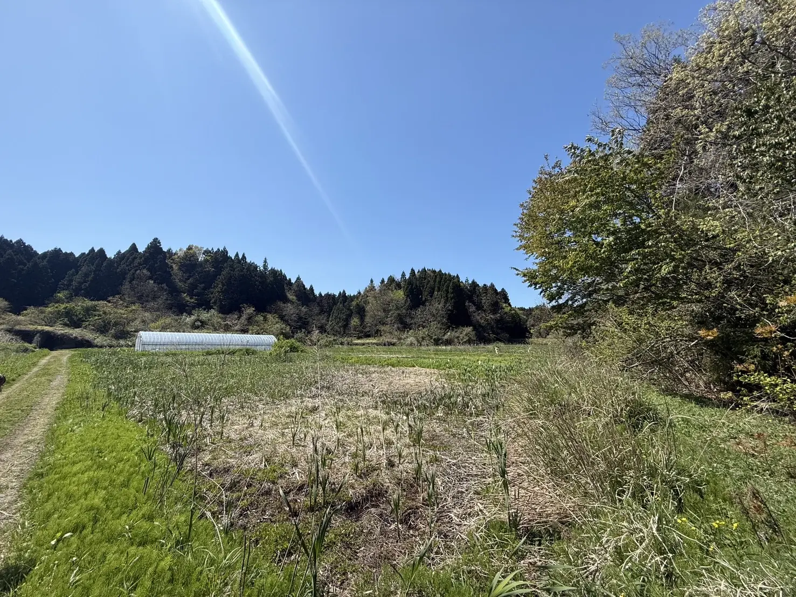

404 / PAGE NOT FOUND
そのページは、
見つかりませんでした。
URLが変更されたか、リンクが古くなっている可能性があります。下の入口から、探していた内容に近いページへ進めます。

こちらから探せます
探していた内容に近いページへ。
01REPORT
泥ん子運動会の記録
9月20日に珠洲市若山町洲巻で開催した一日の写真・結果・収支。
開催レポート → 02BACKGROUND土地と企画の背景
耕作放棄地とは何か、なぜこの土地で企画を始めたのか。
土地と企画 → 03WHY私たちの思い
活動を始めた理由、実践して見えたこと、この先について。
私たちの思い → 04DIAGNOSIS花タイプ診断
32種類の花タイプから、今の自分に近い結果を見つける診断。
診断を始める → 05PARTNER協賛・協力
協賛・後援・協力いただいた企業・団体と、今後の連携について。
協賛・協力 → 06CONTACTお問い合わせ
取材、地域連携、協賛・協力、活動についてのご相談はこちら。
お問い合わせ →